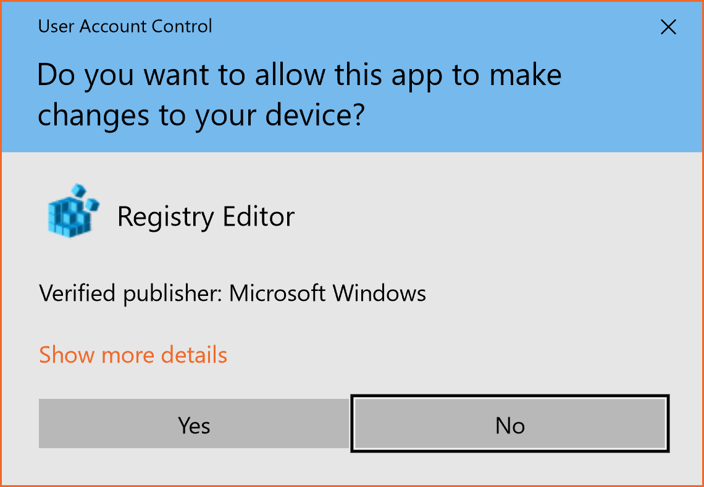

User account control (UAC) is a security feature that was introduced in Windows Vista. When UAC is turned on, user accounts run most programs with restricted permissions.
Some programs still require administrative permissions, and when a program asks for these elevated permissions, the UAC elevation dialog appears.

If you want MaxTo to be able to affect software that is running elevated, MaxTo itself needs to be running elevated. There is a setting for MaxTo to run elevated when it starts.
If you experience that MaxTo doesn't work with specific programs that are running elevated, this is most likely the reason.
Please note that any program which runs elevated has access to everything on your machine.